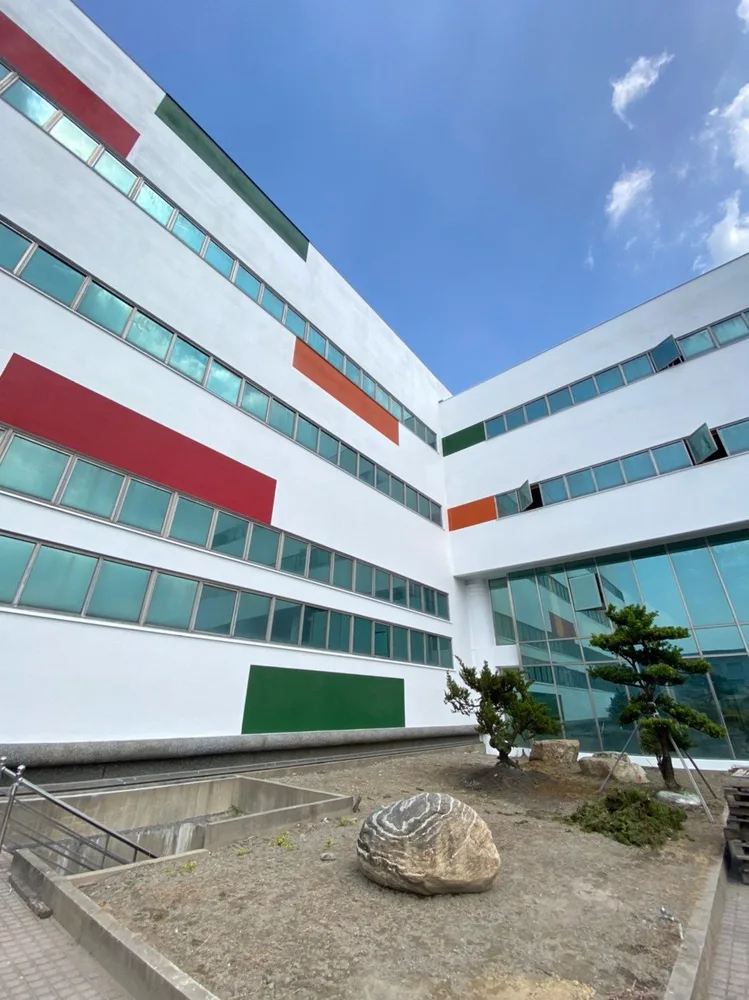
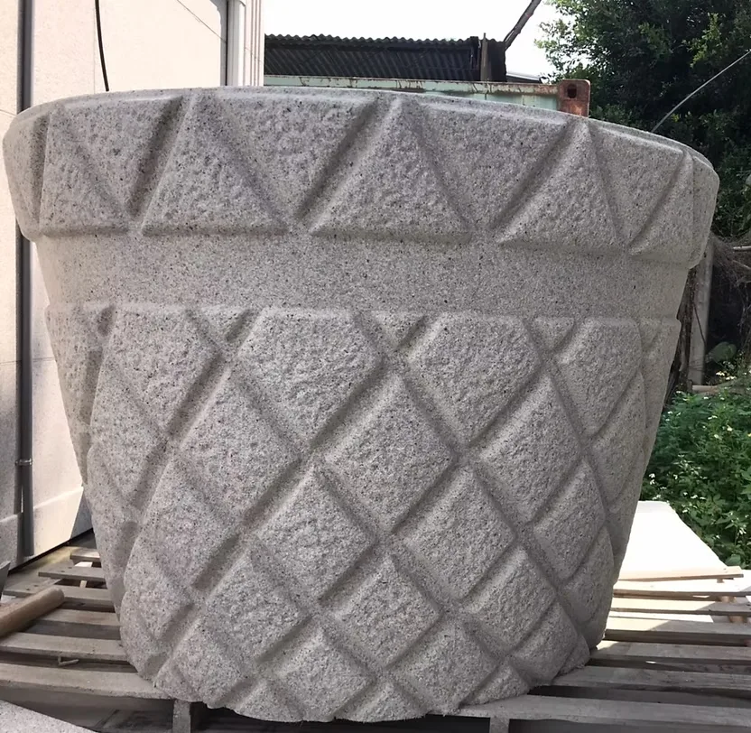
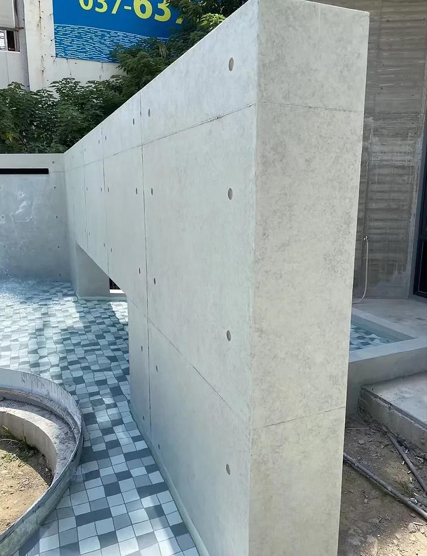
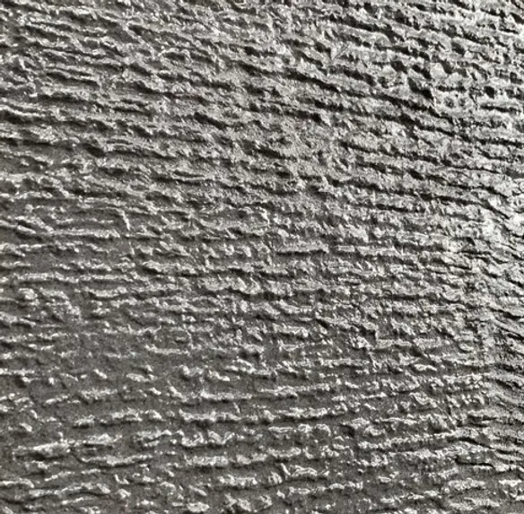
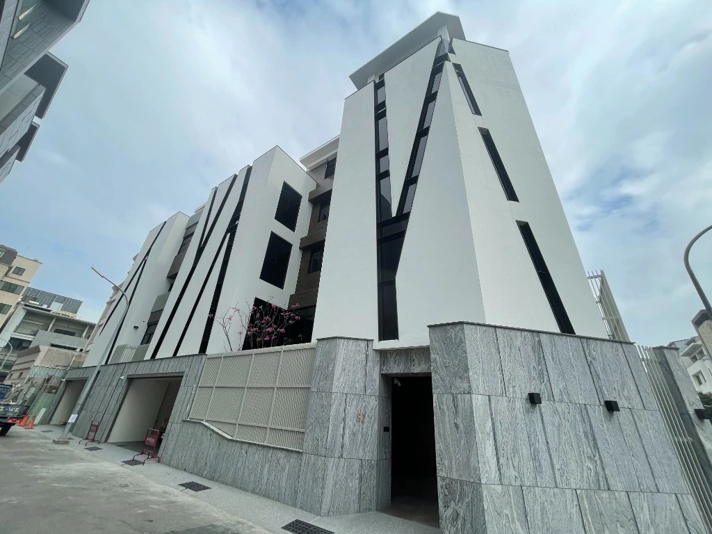

01 認識 PPG 建築塗料：跨越百年的塗料研發底蘊
PPG 創立於 1883 年，總部位於美國賓州，百年來跨足航太防護、工業防蝕、汽車原廠塗料與建築高階塗料等多個極限受候領域，業務遍及全球數十個國家。其塗層技術長期應用於全球多座指標性建築外牆與表面裝飾，累積了深厚的高耐候材料研發實力與穩定的品質控制體系。
百年研發基底
橫跨航太、汽車原廠與全球建築塗層，將極限環境耐候研發經驗轉化為建築立面的常態防護能力。
全球營運與技術累積
業務遍及全球多個市場，材料生產具備標準化流程與嚴格的原物料品管規範。
低 VOC 環保水性配方
發展水性化低 VOC 環保配方塗裝體系，呼應現代建築環境友善與施工安全要求。
抗候、保色與立面美學
著重抗紫外線、耐雨水沖刷與耐酸鹼能力，提供建築立面持久穩定的色彩外觀與飾面防護。
02 騰煇服務定位：不只提供材料，更重「連工帶料」施工整合
建築外牆塗料的成敗，不僅取決於桶子裡的塗料品質，更取決於現場基底的處理工藝。台灣位處亞熱帶海島型氣候，長年面臨高溫多濕、強烈紫外線、地震頻繁引起的牆體微裂紋，以及沿海環境的鹽霧考驗。如果基底未經妥善清潔打底與裂縫處理，再優質的塗料也難以長久附著。
因此，騰煇企業不只是單純提供塗料材料，更全面承接建築外牆塗裝工程。我們依據建築立面需求、基面狀況、預期表面效果與施工條件，協助客戶評估最適塗裝方案，並由專業團隊整合材料與現場施工：
- 基面現況判定：實地檢視牆體是否有空鼓、結構裂縫、白華、舊漆粉化或滲水病徵，確認基材強度與含水率符合規範，杜絕直接覆蓋掩飾問題。
- 適材適所選型：依據建築各向立面的受候條件、建築師設計意象（如彈性防裂、仿花崗岩、後製清水模或厚質礦石）與業主預算，推薦合宜產品。
- 整合材料與施工：由熟練塗裝團隊嚴格落實基底清洗、抗裂修補、滲透底漆加固與多道面漆噴塗，確保每道工序膜厚與乾燥時間符合標準。
03 五項主推產品全解析
不同建築立面對表面質感、抗微裂紋、透氣防滲或仿石紋理的需求各異。騰煇目前主推以下五項 PPG 建築塗料產品，提供建築師、業主及工程團隊完整的選材參考：

PPG 彈性佩能漆 PainTex Coating
主要特色
- 無機礦物色膏製成：色彩明度表現佳，具備良好的耐紫外線性能，長年受候不易黃變與褪色。
- 日照反射表現佳：漆面具備良好的日光反射特性，有助於降低立面表面吸熱負擔。
- 漆膜具備彈性不易龜裂：塗膜具備優良的柔韌延伸彈性，能跨越結構微小動態裂縫，保護結構體。
- 透氣耐水與自潔抗污：透氣耐水塗層阻隔外部液態水滲透，並允許牆體內部水氣自然釋出；耐刷洗、耐酸鹼，不易吸附髒污且具備良好自潔性。
- 低 VOC 水性環保：水性低揮發性有機化合物配方，施工環境友善。
適用方向與應用情境
適用於新建建築外牆防護、既有建築外牆拉皮更新，以及容易因氣候溫差或微震產生微細裂紋之混凝土與水泥粉刷立面。

PPG 絢岩岩彩漆 Granite Coating
主要特色
- 仿花崗岩石材視覺效果：精選無機礦物色粉與穩定色彩顆粒，透過專業噴塗呈現自然逼真的花崗岩立體斑駁紋理。
- 輕量化薄塗材系統：相較於天然厚重石材，薄塗材大幅減輕結構自重負擔，免除繁複乾掛鋼構骨架，提升建築耐震安全。
- 修補外觀整合性佳：薄塗色粒特性便於日後進行局部維護或修補時的外觀色彩整合，降低整體維護難度。
- 柔韌抗候與耐久防護：漆膜具備適度彈性不易龜裂，兼具透氣耐水、耐酸鹼、耐髒污與低 VOC 特性，自潔性佳。
適用方向與應用情境
適用於追求天然花崗岩大器外觀的高層住宅、別墅或商業建築立面；亦特別適合造型曲面、圓柱或 GRC 裝飾構件等真石材難以切割包覆之立面設計，兼顧石材美學與結構輕量化。
官網公開工程案例
目前尚無官網公開案例引用，歡迎洽詢騰煇工程團隊提供實體花崗岩色卡與樣板。

PPG 龐亞漆 Panya Coating
主要特色
- 純粹後製清水模美學：專為呈現素顏混凝土的沉穩樸質質感而研發，可依建築設計品味調配淺灰、中灰或深灰階，並可搭配分模線與螺栓孔等細部工藝施作。
- 無機色漿與奈米乳液：採用無機色漿搭配超微細奈米乳液，塗層緻密平滑，附著力佳且塗層化學穩定性高。
- 耐候保色與防霉抗污：透氣耐水塗層具備優良的抗水斑與防霉性能，長年受候不易風化粉化。
- 水性低氣味環保塗料：全水性配方，施工友善、無刺鼻有機溶劑氣味。
適用方向與應用情境
適用於室外建築立面與特色裝飾牆面，涵蓋新建牆面直接營造清水模現代風貌，以及混凝土、水泥砂漿、磚石基面的既有牆面翻新裝飾。（工程提醒：塗料主要提供立面質感與表面耐候防護，無法單獨解決嚴重結構漏水或壁癌，施工前仍須依基面現況進行專業評估與防水前置處理）

PPG 臻石漆 Real Stone Coating
主要特色
- 厚實自然礦石質感：以天然彩色礦石碎粒為骨材，賦予建築立面厚重沉穩的自然石質觸感與立體光影層次。
- 柔韌抗裂緩衝層：以耐候乳液緊密包覆礦石顆粒，具備良好的附著力與抗龜裂韌性，改善一般石漆日久開裂剝落的困擾。
- 立面耐磨耐刮防護：塗膜固化後具備如天然岩石般的堅韌物理表面強度，適合抗風雨沖刷與日常接觸。
適用方向與應用情境
適用於建築基座、外牆柱體、大廳門面或景觀立面，提供追求厚重沉穩石質意象之公共或企業建築立面塗裝。

PPG 雅飾彈性 500 Elastic 500（簡稱：雅飾500）
主要特色
- 有機色膏與優異保色：採用有機色膏精準調色，光澤表現亮麗且保色性佳，提供多元豐富的色彩搭配選擇。
- 漆膜具彈性不易龜裂：塗膜具備良好的柔韌彈性，可因應基底溫差熱脹冷縮，不易產生表面細紋。
- 滾刷施工遮蓋表現佳：施工遮蓋力優異，塗膜均勻飽滿，滾刷或噴塗工序皆能展現良好平整度。
- 耐久防護與透氣耐水：具備耐刷洗、耐髒污、耐酸鹼與自潔性，全系列低 VOC 環保配方。
適用方向與應用情境
適用於大型住宅、集合住宅、透天住宅與商業建築外牆常態塗裝，以及需要多樣化色彩表現的大面積外牆翻新拉皮工程。
04 騰煇連工帶料塗裝：標準四步驟流程
為確保每一棟建築立面都能展現預期質感並維持穩定耐候期，騰煇建立清晰透明的「連工帶料」塗裝落實流程：
- 需求與基面評估 安排專業工程人員實地勘查，了解建築外牆現況、基面材質（混凝土、水泥砂漿、磁磚或矽酸鈣板）、既有裂縫滲水病徵與預期表面效果。
- 塗料與色彩選擇 依據立面受候條件、建築設計風格與施工現場限制，評估合適的 PPG 塗料品類，並可依需求製作現場 1:1 實體樣板進行色彩與質感確認。
- 材料與施工整合 由騰煇統籌原廠材料調配、鷹架高空防護設備、現場遮蔽與專屬工班進場，落實高壓清洗、基面修補整平、專用底漆與標準道數施工。
- 工程執行與品質管理 依實際工程條件安排施工，嚴格按天候規範把關塗裝間隔乾燥時間與膜厚品質，完工後由專人查驗細節、清理現場，並出具材料出廠證明與工程保固相關文件。
05 常見問題 FAQ
Q1: 騰煇是單純販售 PPG 塗料材料，還是提供工程施工？
騰煇以「連工帶料」的塗裝工程服務為核心，由自家具備技術經驗的工程團隊承接施作。從基面現況診斷、工法建議、實體打樣到現場噴塗施工一貫整合，確保材料性能在現場能完整發揮；若專案有特定材料採購或配合工班需求，亦可依專案條件進行彈性評估。
Q2: 五項主推產品可以隨意互相替代嗎？
不建議隨意替代。每項產品的設計初衷與表面效果截然不同：例如「彈性佩能漆」著重彈性抗裂與耐水透氣，「絢岩岩彩漆」專精於輕量化仿花崗岩紋理，「龐亞漆」專門營造素顏混凝土的清水模美學，「臻石漆」強調天然厚重礦石觸感，而「雅飾彈性 500」則兼顧亮麗色彩與彈性遮蓋。建議依據建築立面設計意象、受候條件與現場基材進行專業選型。
Q3: 外牆重新塗裝，可以單獨解決原本的漏水問題嗎？
塗裝主要提供立面正水壓面的表面耐候防護與毛細水氣阻隔；若滲水根源是來自窗框周邊矽利康老化、頂樓女兒牆結構裂縫、伸縮縫失效或內部水管破損，水氣依然會自結構內部破壞塗層。因此在正式塗裝前，必須先安排專業抓漏與基底防水修補，再行施作塗料，才能達到長效保護效益。
06 樣板索取與專業諮詢
塗料色彩與光澤在自然天候光線、日照角度與不同基底粗糙度下，常有些微視覺差異。為確保設計效果如期呈現，騰煇提供 1:1 實體材質樣板製作與現場勘測服務，協助您做出最合適的立面決策。